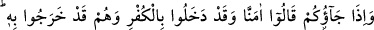

Gönlüm sevgilinin şefkat evidir, o kadar
Bu yüzden orada kimseye kin bulunmaz
Bir zât şöyle der: Kalpler üç çeşittir:
1- Dünyâda şehvetlerin etrafında pervâz olup dönen kalpler,
2- Âhiret nimetlerinin çevresinde dönen kalpler,
3- Sidretü’l-müntehâ’da münâcât için uçan kalpler,
Hâfız şöyle der:
Özgür rindlerin himmetinin kölesiyim
Onlar nezdinde iki dünya bir saman çöpü bile etmez
Akıllı insan nefsin karanlıklarından ve hevâsından, şeytandan ve onun vesvesesinden
kurtulmak için tevhidle meşgul olmalıdır.
Hz. Ömer (r.a.) bir gence baktı ve şöyle dedi: “Ey genç! Üç şeyin şerrinden
korunursan şeytanın şerrinden korunmuş olursun: Laklakından, kabkabından ve
zebzebinden.” Esmaî bunların dil, karın ve edeb yeri olduğunu söyler.
61. Onlar size geldiklerinde “inandık” derler. Halbuki yanınıza inkârla girip yine
inkârla çıkarlar. Allah onların gizlediklerini daha iyi bilir.
Bu âyet, bir kısım yahûdîler hakkında nâzil olmuştur. Onlar Rasûlullah (s.a.)’in
huzuruna gelirler ve münâfıklık yaparak îman ettik derlerdi. “Onlar size geldiklerinde
“inandık” derler.” Hitap, Rasûl (a.s.)’adır. Çoğul olması onu yüceltmek içindir. Ya da
o ve yanında bulunan müslümanlar kastedilmektedir. Yani, onlar size geldiklerinde
müslüman olduklarını ızhar ederler.
“Halbuki yanınıza inkârla girip yine inkârla çıkarlar.” Senden duydukları
kendilerine hiç tesir etmez. “Allah onların gizlediklerini” küfrü “daha iyi bilir.”
Allah’ın daha iyi bildiği ifade edilmiştir. Çünkü Hz. Peygamber (s.a.) dışa vuran
alametlerden onların münâfık olduğunu tahmin ediyor ve Allah’ın nifaklarını açığa
çıkarmasını bekliyordu.
Mesnevî’de şöyle denilmiştir:
İyiyi kötüyü farkeden adamla oyun olmaz
Hele bu adamın aklı gaibi görür, söylerse!
Hiç bir büyü, hiç bir şeytanlık ve hile